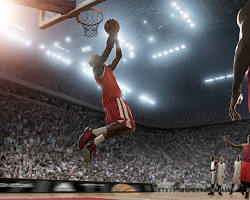
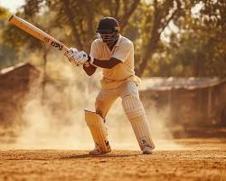
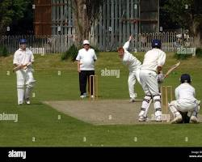
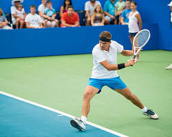
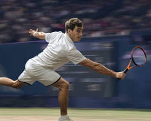

Introduction
Sports serve as a powerful universal language that bridges cultural gaps and brings people together through a shared passion for excellence. Beyond the thrill of competition, they act as a vital classroom for life, teaching us the value of discipline, the necessity of teamwork, and the resilience required to overcome defeat. Engaging in sports not only builds a healthy, capable body but also sharpens the mind, fostering a sense of integrity and fair play that defines a person's character long after the game ends. Ultimately, the true victory in sports lies in the community created and the personal growth achieved, proving that the lessons learned on the field are just as valuable as the final score on the board.
Basketball

Basketball is a fast-paced team sport played on a rectangular court where two teams of five players compete to shoot a ball through a raised hoop. It requires a unique blend of physical explosive power, precise hand-eye coordination, and strategic teamwork to navigate the court while dribbling. Players must master various skills, including passing, rebounding, and defending, all while adhering to strict time constraints like the shot clock. As one of the world's most popular sports, it bridges cultures through its accessibility, needing only a ball and a hoop to play. Today, the game has evolved into a global phenomenon, headlined by the NBA and various international leagues that showcase elite athleticism and tactical depth.
Cricket


Cricket is far more than just a game of bat and ball; it is a strategic masterpiece often described as "chess on grass" that demands immense mental fortitude and physical precision. Whether it is the endurance required for a five-day Test match or the explosive energy of a T20, cricket thrives on the dramatic tension between the bowler's delivery and the batter's response. It is a sport that honors tradition and "gentlemanly" conduct, yet it remains one of the most powerful unifying forces in the world, capable of bringing entire nations to a standstill. From the roar of a packed stadium to the quiet focus of a fielder in the deep, cricket teaches the importance of patience, the value of a single partnership, and the reality that a match can turn on its head in just one delivery.
Football
Often hailed as "the beautiful game," football is a global phenomenon that captures the hearts of billions through its raw emotion and simplistic brilliance. It is a sport where a single moment of magic—a perfectly weighted pass, a defiant save, or a thunderous strike into the top corner—can ignite a stadium and unite entire nations in a shared roar of triumph. Beyond the physical demand for speed and stamina, football is a masterclass in tactical chemistry, proving that individual brilliance only truly shines when backed by the collective rhythm of a team. It serves as a powerful reminder that with a ball at your feet, dreams are limitless, teaching us that persistence, passion, and the spirit of the "underdog" can overcome even the most daunting odds.
Tennis


Tennis is a captivating "duel of the will" that combines the grace of a dance with the intensity of a high-speed chase. It is a sport of extreme isolation and immense mental pressure, where a single player must find the perfect balance between aggressive power and tactical precision on every surface, from the red clay of Paris to the hallowed grass of Wimbledon. Unlike many sports, the scoring system ensures that a match is never truly over until the final point is won, demanding a level of psychological resilience that turns every set into a narrative of survival and recovery. Whether it is a blistering 200 km/h ace or a delicate drop shot, tennis celebrates the elegance of individual brilliance and the relentless spirit of a competitor who refuses to let the ball bounce twice.